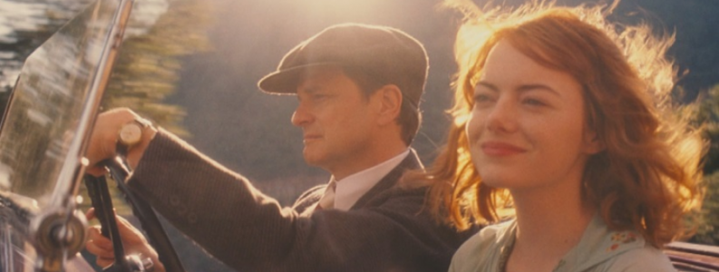

13 MAGIC IN THE MOONLIGHT
- Critique
- Comédie romantique

 Wei Ling Soo est le nom d’artiste derrière se cache Stanley Crawford, homme arrogant et volontairement désagréable. Immense magicien, il a aussi le don pour démasquer tous ceux qui se disent médium. Son meilleur ami le convainc de se rendre dans le sud de la France pour débusquer une jeune américaine qui sévit dans une riche famille. Cette rencontre va-t-elle remettre ses certitudes en question ?
Wei Ling Soo est le nom d’artiste derrière se cache Stanley Crawford, homme arrogant et volontairement désagréable. Immense magicien, il a aussi le don pour démasquer tous ceux qui se disent médium. Son meilleur ami le convainc de se rendre dans le sud de la France pour débusquer une jeune américaine qui sévit dans une riche famille. Cette rencontre va-t-elle remettre ses certitudes en question ?
Avec Magic in the moonlight, Woody Allen signe un long métrage que l’on peut qualifier de sympathique. On ne s’ennuie pas, l’image est jolie et l’ambiance des années folles très bien rendue. Mais c’est aussi un film largement oubliable, où rien n’est véritablement marquant.
- Timothée
- 27.11.2014, 20:00